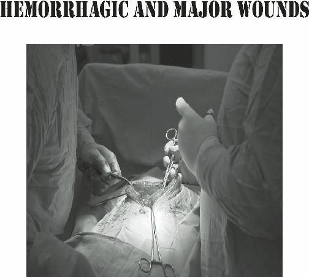
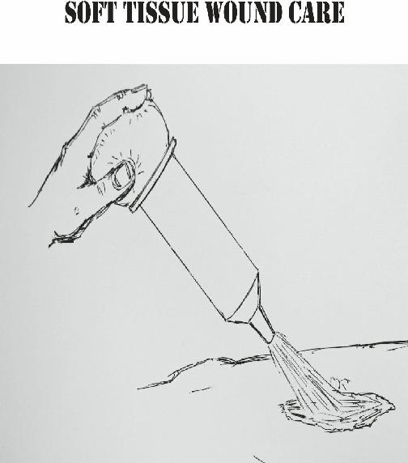
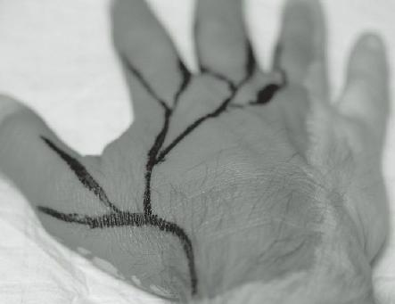
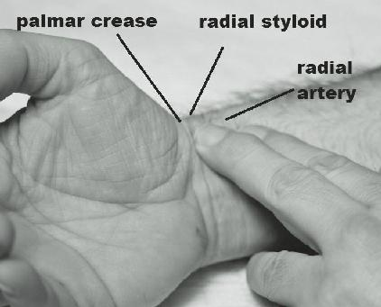
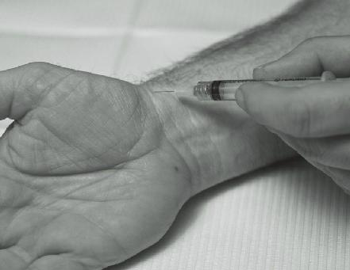
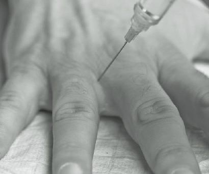

Barrier effectiveness is measured as “halving thickness”.
This is the thickness of a particular shield material that will reduce gamma radiation (the most dangerous kind)
by one half. When you multiply the halving thickness, you multiply your protection.
For example, the halving thickness of concrete is 2.4 inches or 6 centimeters. A barrier of 2.4 inches of concrete will drop exposure to one half. Doubling the thickness of the barrier drops it to one fourth (1/2 x 1/2)
and tripling it will drop it to one eighth (1/2 x 1/2 x 1/2)
the exposure, etc. Ten halving thicknesses will drop the total radiation exposure to 1/1024.
Here are the halving thicknesses of some common materials:
0.4 inches or 1
Lead:
centimeter
Steel:
1 inch or 2.5 centimeters
2.4 inches or 6
Concrete:
centimeters
3.6 inches or 9
Soil (packed):
centimeters
7.2 inches or 18
Water:
centimeters
Wood:
11 inches or 30 centimeters
To take an example, let’s assume you are in a concrete bunker (2.4 inches halving thickness). You would need it to be 24 inches thick to drop your radiation exposure to 1/1024 of the outside environment.
Emergency treatment of radiation sickness involves dealing with the symptoms. Antibiotics may be helpful to treat infections, fluids for dehydration, and drugs like
Zofran (Ondansetron) to treat nausea. In severely ill patients, stem cell transplants and multiple transfusions are indicated but will not be options in an austere setting.
This underscores the importance of an adequate shelter.
There is protection available against some of the long term effects of radiation, however. Potassium Iodide
(known by the chemical symbol KI) is a 130 mg tablet that prevents radioactive Iodine from damaging the specific organ that it targets, the thyroid gland.
Radioactive Iodine is the most common component in fallout that is not in the immediate area of the nuclear event.
Taking KI 30 minutes to 24 hours prior to a radiation exposure will prevent the eventual epidemic of thyroid cancer that will result if no treatment is given. Radiation from the 1986 Chernobyl disaster has accounted for more than 4,000 cases of thyroid cancer so far, mostly in children and adolescents. More are expected in the coming years.
Although there is a small amount of KI in ordinary iodized salt, not enough is present to confer any protection by ingesting it. It would take 250 teaspoons of household iodized salt to equal one Potassium Iodide tablet!
If radiation exposure is expected, take the KI tablet once a day for 7-10 days, or longer if prolonged or multiple exposures are expected. Children should take
1/2 doses. It is also recommended to consider 1/2 tablet for large dogs, and 1/4 tablet for small dogs and cats.
The largest commercial retailer for KI tablets is
KI4U.com.
Don’t depend on supplies of the drug to be available after a nuclear event. Even the federal government will have little KI in reserve to give to the general population.
In recent power plant meltdowns, there was little or no
Potassium Iodide to be found anywhere for purchase. If you have a limited supply, it is important to know that children are the most likely to develop thyroid cancer after an exposure and should be treated first.
If you find yourself without a supply, consider this alternative: 2% tincture of Iodine solution (brand name
Betadine). “Paint” 8 ml of Betadine on the abdomen or forearm 2-12 hours prior to a radiation exposure and reapply daily. Enough should be absorbed through the skin to give protection against radioactive Iodine in fallout.
Apply 4 ml. on children 3 and older (but under 150 lbs. or 70 kg.). Toddlers should have 2ml painted on, and infants 1 ml. This strategy should also work on animals. If you don’t have a way to measure in ml, remember that a standard teaspoon is about 5 milliliters.
Discontinue the daily treatment after 3 days or when
Radioiodine levels have fallen to safer levels.
Be aware that those who are allergic to seafood will probably be allergic to Iodine. Adverse reactions may also occur if you take medications such as diuretics and
Lithium.. It is also important to note that you cannot drink Betadine, as it is poisonous if ingested.
Although many in the preparedness community don’t view a nuclear event as the most likely disaster scenario, it’s important to learn about ALL the possible issues that may impact your family in uncertain times.

The preparedness community is concerned about the possibility of various calamities. Economic collapse, solar storms, global warming, and civil unrest are just a few. There is one scenario, however, that few consider as a possible cause of a long-term survival situation:
biological warfare.
Biological warfare is the term given to the use of infectious agents such as bacteria, viruses, fungi or their by-products to wreak death and havoc among a specific population. As a result, the user achieves control over an area or a segment of the population by weakening the ability to resist. Biological weapons don’t necessarily have to kill humans: unleashing a horde of locusts to destroy crops or agents that kill livestock can be just as effective.
This type of weapon has been used since ancient times, and even appears in the bible as part of the plagues visited upon Pharaoh by a wrathful God.
Medieval accounts of Bubonic plague-ridden corpses catapulted into besieged cities abound; this method was used as late at 1710, when the Russians attacked the
Swedish city of Reval (present day Tallinn) in this manner.
The Western hemisphere was changed forever by inadvertent introduction of smallpox into the Native
American population, killing 90% in some areas and opening vast swaths of land for European colonization.
In addition, purposeful biological warfare occurred against Native Americans when the British presented a large “gift” of infected blankets as a “peace” offering during Pontiac’s War in the mid-1700s.
As time progressed, new methods and infectious agents (Anthrax) were used in certain situations during
World War I. As a result, use of biological weapons was banned by the Geneva Protocol in 1925, but research and production was still carried out by both sides during
World War II. Research into the use of Anthrax by the
United Kingdom left their laboratory area in Scotland contaminated for the next five decades.
In 1972, the storage, production, and transport of biological warfare agents was banned by the Biological
Weapons Convention (BWC). Despite this, there are a number of violations that have been documented in the former Soviet Union and Iraq, and various others suspected. As of 2011, 165 countries have signed the
BWC pact.
The perfect biological weapon would have these characteristics:
Be infectious and contagious in a large percentage of those exposed.
Cause severe long-term debilitation or death of the infected organism.
Have few available antidotes, preventives or cures.
Be easily deliverable to the area or population targeted.
Have low likelihood of causing damage to those using the agent.
The concerns about “accidents” affecting the aggressor have most countries reluctant to use such weapons in normal tactical situations. During the largest such accident in 1979, a Russian lab released anthrax into the surrounding area, killing 42 people, infecting sheep over
200 miles away, and causing the immediate area to be off-limits even today.
Some candidates for use as biological agents include
Anthrax, Smallpox, Viral hemorrhagic Fevers (Ebola, etc.), and Pneumonic Plague.
Anthrax can be contracted in several ways, by skin contact, inhalation, and gastrointestinal infection. More common in livestock than people, Anthrax is not an ideal
“weapon of mass destruction” in that no person-toperson contagion occurs, except in skin cases (the least lethal form). A “cloud” of Anthrax would be necessary to affect a large population, although large numbers of infected livestock could result in an epidemic of the disease in humans.
The bacterium exists as spores which, in the right environment, release toxins that cause a flu-like syndrome which eventually destroys cells in lymph nodes, spreading to the lungs and blood, and may be highly lethal. Although Penicillin, Doxycycline, and
Ciprofloxacin (Fish-Pen, Bird-Biotic, and Fish-Flox, respectively) are effective against this bacteria as a preventative or for early treatment, full-blown inhalation
Anthrax may be difficult to survive; the toxins released by the spores remain even if the spores are killed.
Inhalation Anthrax can progress to shock and death in many cases; luckily, not everyone exposed will get symptoms. Because of higher risk of exposure, certain individuals, such as livestock workers, are often offered a vaccine against the disease.
“Pneumonic” is one of three types of Plague and, by far, the most contagious, easily spread by coughing bacteria into the air. It is caused by a bacterium known as Yersinia Pestis, usually found on rodents and other small animals in their fleas. Also starting off as a flu-like syndrome, it quickly develops into pneumonia with fever, weakness, shortness of breath, and cough (often with blood).
Pneumonic plague is different from Bubonic plague in that the patient will not have the classic swellings in the groin or armpit (called “Buboes”). Unlike inhalation
Anthrax, which may take weeks to develop symptoms, patients with Pneumonic Plague may be dead in 2-4 days if not treated early.
Tetracycline (veterinary equivalent: Fish-Cycline),
Doxycycline (Bird-Biotic) and Ciprofloxacin (Fish-Flox), and IV Gentamycin are effective treatments for victims of Plague. Oxygen is often used to support the sick individual, and protective masks are imperative for those who are caring for them.
There are several types of viral fevers associated with different organisms that normally infect rodents.
Hemorrhagic Fevers like Ebola start off with fever, diarrhea, and weakness, but progress to more serious problems relating to internal and external hemorrhaging.
Patients may bleed from eyes, ears, nose, mouth, or rectum and may have bruising on the skin from subcutaneous bleeding.
Normal antivirals don’t seem to cure this disease, and death rates may be as high as 90%. The illness is spread by bodily fluids and other contact, so masks and gloves, again, are extremely important for health care workers.
Smallpox is another viral illness that is highly contagious and was responsible for the decimation of the
Native American population. Related to the chickenpox virus, it differs in that all the blisters develop at the same time, rather than their being at different points of developing and healing. Contact with these blisters causes the disease to be contagious. Fever and fatigue accompany the illness. Although rare in developed countries now, it was prevalent in the past and FEMA stockpiles Smallpox vaccines in enough quantity to vaccinate every U.S. citizen. No curative treatment is currently available, and complications can lead to shock and death.
By-products released by microbes and plants walk the fine line between biological weapons and chemical weapons. Toxin released by the bacteria that causes botulism causes paralysis of muscles, and is used in small quantities as the cosmetic agent Botox. Ingredients in castor beans contain Ricin, a potent toxin that causes respiratory and circulatory failure. 3 mg. of ricin is potent enough to kill an average-sized adult if inhaled.
A classic example of old-time survivalism that may be useful is the “gas mask”. A gas mask is placed over the face to protect the wearer from inhaling airborne pollutants and toxic gases. It forms a sealed cover over the nose and mouth with filters that allow breathing.
Oftentimes, it will also cover the eyes or the entire face.
Although cumbersome, it is superior to the surgical mask as a barrier. The user is still vulnerable to chemicals that can penetrate the skin, unless they are wearing a protective suit as well.

In a collapse situation, the performance of tasks like chopping wood, cooking food, etc. will likely lead to a number of soft tissue injuries (those that do not involve bony structures). From a simple cut to a severe burn, any damage to skin is akin to a chink in your body’s protective armor.
Your skin is a considered an organ, indeed, the largest organ in the body, and serves as a barrier against infection and loss of fluids. When this barrier is weakened by a laceration or burn, your health is in jeopardy. Rapid and effective treatment of these injuries will prevent them from becoming life-threatening.
Being the rugged individualists that they are, some in the preparedness or homesteading community may be likely to shrug off minor injuries as inconsequential. This couldn’t be farther from the truth. Any minor injury has the potential to cause trouble down the road. As a healthcare provider during troubled times, you must monitor the healing process of every wound.
Each wound is different and must be evaluated separately. If not present at the time the wound is incurred, the medic should begin by asking the simple question: “What happened”? A look around at the site of the accident will give you an idea of what type of debris you might find in the wound and the likelihood of infection. Always assume a wound is dirty initially.
Other questions to ask are whether the victim has chronic medical problems, like diabetes, and whether they are allergic to any medications. You might be surprised to find that (even close) friends may have not imparted this history to you in all the time that you’ve known them.
The physical examination of a wound requires the following assessment: Location on the body, length, depth, and the type of tissue involved. Circulation and
Nerve involvement must also be evaluated. If an extremity, have the patient show you a full range of motion, if possible, during your examination. This is especially important if the injury involves a joint.
This section will deal with various injuries, their evaluation, and treatment. With close observation, your people will have the best chance of staying out of trouble.

A soft tissue injury is considered minor when it fails to penetrate the deep layer of the skin, called the “dermis”.
This would include cuts, scrapes and bruises.
Cuts and Scratches: These tears in the skin only penetrate the “epidermis” (superficial skin layer) and become infected on an infrequent basis in a healthy person.
Abrasions or Scrapes: A portion of the epidermis has been scraped off. You probably have experienced plenty of these as a child.
Bruises or Contusions: These result from blunt trauma and do not penetrate the skin at all.
However, there is bleeding into the skin from blood vessels that have been disrupted by the impact.
All of the above minor injuries can be easily treated.
Wash the wound anywhere that the epidermis has been violated. The use of an antiseptic such as Betadine
(Povidone-Iodine solution), honey, or triple antibiotic ointment such as Neosporin or Bactroban will be helpful to prevent infection. Ibuprofen and Acetaminophen are useful over-the-counter drugs to treat minor pain.
Minor bleeding can be stopped with a wet styptic pencil, an item normally used for shaving cuts. The wound, if it broke the skin, should have a protective adhesive bandage (such as a Band-Aid) to prevent infection.
Applying pressure and ice (if available) wherever a bruise seems to be spreading will stop it from getting bigger. Bruises will change color over time from blackish-blue to brown to yellow. Bruises may be gravity-dependent and may descend slightly and time goes on.
The Liquid Skin bandage is an excellent way to cover a minor injury with some advantages over a regular bandage. You apply it once to the cut or scrape;
it dries within a minute or so and seals the wound. It also stops minor bleeding, and won’t fall out during baths. There are various brands (Band-Aid Liquid
Bandage, New Skin, Curad, 3M No Sting liquid bandage)
and many come as a convenient spray. These injuries will heal over the next 7-10 days, dependent on the amount of skin area affected.
You don’t always have to travel the traditional road to treat many medical problems. If you have one of the minor injuries mentioned, why not consider natural remedies? Here’s an alternative process to deal with these issues:
1. Evaluate seriousness of wound; if minor, you may continue with herbal treatment.
2. Stop minor bleeding with herbal blood clotting agents such as Cayenne Pepper powder, and compress the area with gauze. Substances that clot blood are called “hemostatic” agents.
These include:
Essential oils-Geranium, Helichrysum,
Lavender, Cypress, Myrrh, or HyssopAny oil applied to a gauze compress.
Medicinal Herbs-Cayenne pepper powder or cinnamon powder with direct application, Yarrow tincture soaked in a gauze compress.
3. After minor bleeding is stopped, the wound should be cleaned with an herbal antiseptic:
Mix a few drops of oil with sterile water and wash out the wound thoroughly. Essential oils with this property include:
Lavender oil
Tea tree
Rosemary
Eucalyptus
Peppermint
4. Apply herbal antiseptic to the wound using the above essential oils; for example, use peppermint oil in a 50/50 mix with carrier oils such as olive or coconut oil. Other natural antiseptics include garlic, raw unprocessed honey, Echinacea, witch hazel, and St. John’s
Wort.
5. If needed, use natural pain relievers, such as:
Geranium oil
Helichrysum oil
Ginger oil
Rosemary oil
Oregano oil
Apply 2-4 drops of a 50/50 dilution around the wound’s edges.
6. Dress the wound using clean gauze. Do not wrap too tightly.
7. Change the dressing, reapply antiseptic, and observe for infection twice daily until healed.
Infected wounds are discussed in the section on cellulitis in this book.
Some naturopaths advocate the use of activated charcoal to help wounds heal. To make a poultice:
Mix 1 -2 tablespoons of actuvated charcoal with a small amount of water to form a moist paste.
Add Flax seed meal to help retain moisture.
Spread the paste on gauze cut to fit the wound and fold it over.
Apply to the injury and cover completely with plastic food wrap if available.
Tape the poultice securely in place and leave overnight.

In a destabilized society, the risk of civil unrest is high.
Traumatic wounds may be commonplace. Therefore, the medic for a family or group must be prepared for the worst possible injuries without the benefit of a surgeon and operating room (image above).
Cuts in the skin can be minor or catastrophic, superficial or deep, clean or infected. Most significant cuts (also called 'lacerations’) penetrate both the dermis and epidermis and are associated with bleeding, sometimes major. Knowing how to manage a hemorrhagic wound quickly and effectively will be of paramount importance.
Bleeding can be venous in origin, which manifests as dark red blood, draining steadily from the wound.
Bleeding can also be arterial, which is bright red (due to higher oxygen content) and comes out in spurts that correspond to the pulse of the patient. As the vein and artery usually run together, a serious cut can have both.
Once below the level of the skin, large blood vessels and nerves may be involved. Assess circulation, sensation, and the ability to move the injured area. You will notice more problems with vessel and nerve damage in deep lacerations and crush injuries.
For an extremity injury, evaluate what we call the
“Capillary Refill Time” to test for circulation beyond the area of the wound. To do this, press the nail bed or finger/toe pad; in a person with normal circulation, this area will turn white when you release pressure and then return to a normal color within 2 seconds. If it takes longer or the fingertips are blue, you may have a person who has damaged a blood vessel. If motor function or sensation is decreased (test by lightly pricking with a safety pin beyond the level of the wound), there may be nerve damage.
Evaluating blood loss is an important aspect of dealing with wounds. An average size human adult has about 10 pints of blood. The effect on the body caused by blood loss varies with the amount of blood loss incurred:
1.5 pints (0.75 liters) or less: little or no effect;
you can donate a pint of whole blood, for example, as often as every 8 weeks.
1.5-3.5 pints (0.75-1.5 liters): rapid heartbeat and respirations. The skin becomes cool and may appear pale. The patient is usually very agitated. If you are not accustomed to the sight of blood, you might be also. Even a small amount of blood on the floor or on the patient may make an inexperienced medic queasy.
3.5-4 pints (1.5-2 liters): Blood pressure begins to drop; the patient may appear confused.
Heartbeat is usually very rapid.
Over 4 pints (more than 2 liters): Patient is now very pale, and may be unconscious. After a period of time with continued blood loss, the blood pressure drops further, the heart rate and respirations decrease, and the patient is in serious danger.
When you encounter a person with a bleeding wound, the first course of action is to stop the hemorrhage.
Oftentimes, direct pressure on the bleeding area might stop bleeding all by itself. Bleeding in an extremity may be slowed by elevating the limb above the level of the heart.
The medic should always have nitrile gloves in his or her pack; this will prevent the wound from contamination by a “dirty” hand. Try to avoid touching the palm or finger portions of the gloves as you put them on. If there are no gloves, grab a bandanna or other cloth barrier and press it into the wound.
Additionally, pressing on the “pressure point” for the area injured may help slow bleeding.
Pressure points are locations where major arteries come close enough to the skin to be compressed manually. Pressing on this area will slow down bleeding further down the track of the blood vessel.
Using pressure points, we can make a “map” of specific areas to concentrate your efforts to decrease
bleeding. For example, there is a large blood vessel behind each knee known as the Popliteal Artery. If you have a bleeding wound in the lower leg, say your calf, applying pressure on the back of the knee will help stop the hemorrhage. A diagram of some major pressure points is below:
If this fails to stop the bleeding, it may be appropriate to use a tourniquet. The military uses a CAT (Combat
Application Tourniquet) tourniquet, which is simple to use and could be even be placed with one hand. This is especially useful if the bleeding victim is you.
Tourniquets must be placed tightly; arterial bleeding requires more pressure than simple venous bleeding to stop.
The placement of a tourniquet to a wound must be made judiciously. The tourniquet stops bleeding from the open blood vessel, but it also stops circulation in nearby intact blood vessels as well. It is important to note that the tourniquet, once placed, should be loosened every ten minutes or so, to allow blood flow to uninjured areas and to determine whether the bleeding has stopped due to the natural clotting process.
Tourniquets are painful if they are in place for too long, and prolonged use could actually cause your patient to lose a limb due to lack of circulation. As well, your body may build up toxins in the extremity; these become concentrated and rush into your body core when you release the tourniquet. It takes less than an hour or two with a tourniquet in place to cause this problem.
Once you are comfortable that major bleeding has abated, release pressure from the tourniquet while leaving it within easy reach. Flush the wound aggressively with sterile water or a 1:10 Betadine solution. This procedure is known as “irrigation”. You may have heard of cleaning wounds with alcohol or hydrogen peroxide; this method is acceptable for a first cleaning if you have nothing else but not for later wound care (see the section on soft tissue wound care).
Packing the wound with bandages is not just for sopping up blood; bandages are useful to apply pressure.
More than one bandage may be required to keep the wound from bleeding further. It’s important to make sure that you put the most pressure where the bleeding was occurring in the wound. If the blood was coming from the top of a large wound, start packing there.
Again, keep compressing the wound.
Now, cover the whole area with a dry dressing for further protection. The Israeli army developed an excellent bandage which is easy to use and is found almost everywhere survival gear is sold. The advantage of the Israel battle dressing is that it applies pressure on the bleeding area for you. Don’t forget that bandages get dirty and should be changed often. Twice a day is a minimum until it has healed.
The above process of stopping hemorrhage and dressing a wound will also work for traumatic injuries such as knife wounds and gunshot wounds. You have probably heard that you should not remove a knife because it can cause the hemorrhage to worsen. This will give you time to get the patient to the hospital, but what if there are no hospitals? You will have to transport your victim to your base camp and prepare to remove the knife. It can’t stay in there for months while you’re waiting for society to re-stabilize. Have plenty of gauze and clotting agents available.
Bullet wounds are the opposite, in that the bullet is usually removed if at all possible when modern medical care is available. In you do not have the luxury of transferring the patient to a trauma center, you will want to avoid digging for a hard-to-find bullet. Even though there are instruments made for this purpose, manipulation could cause further contamination and bleeding.
For a historical example, take the case of President
James Garfield. In 1881, President Garfield was shot by an assassin. In their rush to remove the bullet, 12 different physicians placed their (ungloved) hands in the wound. The wound, which would not have been mortal in all probability, became infected. As a result, the president died after a month in agony. In austere settings, think twice before removing a projectile that isn’t clearly visible and easily reached.

Commercial Hemostatic Agents
In studies of casualties in the recent wars, 50% of those killed in action died of blood loss. 25% died within the first “golden” hour after being wounded. A victim’s chance of survival diminishes significantly after 1 hour without care, with a threefold increase in mortality for every 30 minutes without care thereafter.
Therefore, the question we must pose is, to paraphrase Hamlet, “To bleed or NOT to bleed”. Ever since there have been traumatic injuries, we have been concerned with deaths due to hemorrhage. The
Egyptians mixed wax, barley, and grease to apply to a bleeding wound. The Chinese and Greeks used herbs like bayberry, stinging nettle, yarrow, and others for the same purpose. Native Americans would apply scrapings from the inside of fresh animal hides mixed with hot sand and downy feathers. These treatments would sometimes be successful, sometimes not.
The control of major hemorrhage may be the territory of the trauma surgeon, but what if you find yourself without access to modern medical care? In the last decade or so, there have been major advancements in hemostasis (stopping blood loss). Knowledge of their appropriate use in an emergency will increase the injured patient’s chance of survival.
Although there are various types of hemostatic agents on the market for medical storage, the two most popular are Quikclot and Celox. They are two different substances that are both available in a powder or powder-impregnated gauze.
Quikclot originally contained a volcanic mineral known as zeolite, which effectively clotted bleeding wounds but also caused a reaction that caused some serious burns. As a result, the main ingredient was replaced with another substance that does not burn when it comes in contact with blood.
The current generation of Quikclot is made from
Kaolin, the same stuff you find in the anti-diarrheal product Kaopectate. It is so common that it is said to be what makes Georgia clay red. It does not contain animal, human, or botanical components.
Contact between kaolin and blood immediately initiates the clotting process by activating Factor XII, a major player in the clotting process. The powder or impregnated gauze is applied and pressure placed for several minutes. Quikclot is FDA-approved and widely available; the gauze dressing is easier to deal with than the powder, but can be expensive. Quikclot has a shelf life of 3 years or so, less if the packages are left out in the sun.
One negative with Quikclot is that it does not absorb into the body and, some believe, can be difficult to remove from the wound. This was certainly true of previous generations but it is claimed to no longer be as big an issue, especially if you use the gauze dressing.. If more than one dressing is required, don’t remove the first one: Place the second gauze on top. Use an irrigation syringe to flush the wound after the gauze is finally removed.
In a study published in the The Journal of Trauma,
Injury, Infection, and Critical Care, (Volume 68, Number
2, February 2010), the kaolin gauze was found to be as safe as standard surgical gauze.
Celox is the other popular hemostatic agent, and it is composed of chitosan, an organic material processed from shrimp shells. As such, those allergic to seafood could possibly have a reaction to Celox. This “powder”
product is actually made up of high surface area flakes.
When these tiny flakes come in contact with blood, they bond with it and form a clot that appears as a gel. Like
Quikclot, it also comes in impregnated gauze dressings, which are, again, relatively expensive.
Celox will cause effective clotting even in those on anti-coagulants like Heparin, Warfarin or Coumadin without further depleting clotting factors. Chitosan, being an organic material, is gradually broken down by the body’s natural enzymes into other substances normally found there. Like Quikclot, Celox is FDAapproved.
Studies by the U.S. government compare Celox favorably to other hemostatic agents.
Both Quikclot and Celox gauze dressings have been tested by the U.S. and U.K. military and have been put to good use in Iraq and Afghanistan. Although effective, you shouldn’t use these items as a first line of treatment in a bleeding patient. Pressure, elevation of a bleeding extremity above the heart, gauze packing and tourniquets should be your strategy here. If these measures fail, however, you have an effective extra step towards stopping that hemorrhage.

Irrigating the wound
Once you have stopped the bleeding and applied your dressing, you are in safer territory than you were. In an austere setting, however, you must follow the status of the wound until full recovery in your role as medic.
Continued wound care is your responsibility.
An open wound can heal by two methods:
Primary Intention (Closure): The wound is closed in some way, such as with sutures or staples. This results in a smaller scar, but carries the risk of inadvertently sequestering bacteria deep in the wound.
Secondary Intention (Granulation): Leaving a wound open causes the formation of “granulation tissue”.
Granulation tissue is rapidly growing early scar tissue that is rich in blood vessels. It fills in spaces where the wound edges are not together. After a period of time, it turns into mature scar tissue. This scar is larger than if the wound were closed by primary intention, but decreases the risk of infection if properly cared for.
Often, it is safest to allow a wound to heal on its own rather than suture or staple it closed. Wound dressings must be changed regularly (at least twice a day or whenever the bandage is saturated with blood, fluids, etc.) in order to give the best chance for quick healing.
When you change a dressing, it is important to clean the wound area with drinkable water or an antiseptic solution such as dilute Betadine (povidone-iodine). Use 1 part Betadine to 10 parts water.
remember the old saying, “The solution to pollution is dilution”. Using a bulb or irrigation syringe (60-100 ml) will provide pressure to the flow of water and wash out old clots and dirt. Lightly scrub any open wound with diluted Betadine or sterilized water. You may notice some (usually slight) bleeding. This is a sign of tissue that is forming new blood vessels and not necessarily a bad sign. Apply pressure with a clean bandage until it stops.
Interestingly, most studies find that sterilized
(drinkable) water is just as good as a concentrated antiseptic solution for wound healing (sometimes better).
Although it is acceptable to perform a first cleaning with
Betadine or Hydrogen Peroxide, later cleaning should definitely not use these concentrated products. New cells are trying to grow, and they do this best in a moist environment. Concentrated antiseptics dry out these fragile new cells and make slow down healing.
An alternative antiseptic solution that is easy to make using common storage supplies is Dakin’s Solution. First used during WWI, Dakin’s solution is used to disinfect wounds on the skin, such as pressure sores in bedridden patients. It is inexpensive to put together, dissolves dead cells, and uses the following:
Sodium hypochlorite solution (regular strength household bleach).
Sodium bicarbonate (baking soda)
Boiled tap water
To make Dakin’s solution, take 4 cups of sterilized water and add ½ teaspoon of baking soda. Then, add a certain amount of bleach to reach the strength that you’ll need. 3 teaspoons will act as a mild antiseptic effect
(plenty for clean wounds that are healing) and 3 tablespoons will give you a stronger effect for infected wounds. You can use a full 3 fluid ounces (about 100 milliliters) for a full strength solution to treat the worst infections. Do not take Dakin’s solution internally and watch for allergic reactions in the form or rashes or other irritation. Store in darkness at room temperature and make a new batch every few days, as it loses potency relatively quickly. Do not freeze or heat up the solution.
To assure rapid healing of open wounds, we use a type of dressing method known as “wet-to-dry”. Apply a bandage directly to an open wound which has been soaked in sterilized water and wrung out. In this fashion, we prevent the drying out of new cells by keeping them in a moist environment.. On top of the bandage which touches the healing wound, you will place a dry bandage and some type of tape to secure it in place. Thus, you have a “wet-to-dry” dressing.
It may also be a good idea to apply some triple antibiotic ointment around a healing wound to prevent infection from bacteria on the skin. Raw honey, lavender oil, and tea tree oil are some natural alternatives.
As time goes on, you might see some blackish material on the wound edges. This is non-viable material and should be removed. It might just scrub out, or you might need to take your scissors or scalpel and trim off the dead tissue. This is called “debridement” and removes material that is no longer part of the healing process.
When a laceration occurs, our body’s natural armor is breached and bacteria get a free ride to the rest of our body. Once there, our health is in real danger. Therefore, it only makes common sense that we want to close that breach.
There is always some controversy as to whether to close a wound. A laceration may be closed either by sutures, tapes, staples or medical “superglues” such as
Derma-Bond. When and why would you choose to close a wound, and what method should you use? After rendering first aid, which includes removal of any foreign objects, hemostasis (stopping the bleeding), irrigation, and antiseptic application, you will have to determine the answer.
Tapes, Glues, and Staples
There are several methods available to close a laceration.
It makes common sense to use the simplest and least invasive method that will do the job. The easiest to use are “Steri-Strips” and butterfly closures. These are adhesive bandages which adhere on each side of the wound to pull it together. They don’t require puncturing

the skin and will fall off on their own, in time. Even duct tape can be used to make a butterfly closure.
improvised butterfly closure with duct tape
The second least invasive method is Cyanoacrylate, special “glue” sold as Derma-Bond or Liquiseal. This is medical-grade adhesive that is made specifically for use on the skin. Simply approximate the skin and run a thin line of glue down the laceration. Hold in place until dry.
It will naturally peel off as the skin heals.
Some have recommended (the much less expensive)
household “SuperGlue” for wound closure. This preparation is slightly different chemically, and is not made for use on the skin. It may cause skin irritation in some, and burn-like reactions have been reported.
If it’s all you have, however, you may choose to use it. You can test superglue for allergic reactions by placing a small amount on the inside of your forearm and observe for a rash over the next 24 hours.
Another closure method is the use of skin staplers.
They work by “pinching” the skin together and should be removed in about 7 days. You will require two toothed tweezers (also called “Adson’s Forceps”) to evert the skin edges and approximate them for the person doing the stapling. As such, stapling is best done if you have an assistant. Interestingly, the most skilled person is the one holding the tweezers, not the person stapling.
Staples are best removed with a specific instrument known as a staple remover. Stapling equipment is widely available, but probably not as cost-effective as other methods.
Sutures are your most invasive method of wound or laceration closure. As it can be done by a single person, it is the one that requires the most skill. Before you choose to close a wound by suturing, make sure you ask yourself why you can’t use a less invasive method instead.
Keep it simple. Use the other methods first, and save your precious suture/staple supplies for those special cases that really need them. In a long-term survival situation, it’s unlikely you’ll ever be able to replenish those items.
All About Sutures
I am asked to teach suturing more than any other first aid procedure, even though it really isn’t FIRST aid at all. Suturing is best done by someone with experience, and you don’t get that kind of experience in your typical first responder course. Survival medical training teaches you to stabilize and transfer the patient to modern facilities. But what if there is no modern care available?
You’ll need to obtain the knowledge to be able to function effectively; that means learning how to suture.
You must also understand when a wound should be closed and, more importantly, when it shouldn’t.
Human skin has probably been sutured ever since we learned to make needles from bone and antler 30,000 years ago. The first documentation of suturing was from the Egyptians 5,000 years ago, and actual stitches have been found in mummies more than 3,000 years old. The
Greeks and Romans, as well as various native cultures, also worked with sutures.
Using needles of bone, ivory and copper, they would use various natural materials such as hemp, flax, cotton, silk, hair and animal sinew to put wounds together. The classical era physician Galen, in the 2nd century A.D., was well known for stitching together the severed tendons and ligaments of gladiators, sometimes restoring function to a damaged extremity. He was one of the first to distinguish between a “clean” and a “dirty” wound.
In primitive cultures, ingenious ways were developed to close wounds. In some tropical rain forests, the natives would collect army ant soldiers whenever there was a wound to close. They would place the jaws of the ant on the skin, the ant would bite the skin closed, and then they would twist its body off! The head stayed on, with the jaws shut and the skin closed. Native
Americans would pull off agave cactus needles along with a strip of the plant material attached, and use that as suture.
Suture technology didn’t really advance much until the late 19th century, when the concept of sterilization of needles and suture material came into fashion. By this time, suture material was either “chromic catgut”
(actually made from the intestinal lining of sheep and cows) or silk. Both of these materials are still available today in one form or another.
Suture “string” is either absorbable or nonabsorbable. Catgut, for example, will dissolve in the body over the course of several weeks. Absorbable sutures are used for internal body work or areas such as the inside of the cheek or the vagina.
Silk is non-absorbable, and is used on the skin
(where it can be eventually removed) or anywhere internally that you are willing to have the suture material stay forever. Around 1930, synthetic materials made their debut in the form of Nylon and polypropylene
(Prolene). These are non-absorbables that are also available to this day and are, essentially, like fishing line.
Since that time, various different manufactured types of suture material have reached the market, both absorbable
(such as polyglycolic acid or Vicryl) and nonabsorbable.
Suture material comes in various thicknesses: 0, 2-0,
3-0, 4-0, 5-0 and 6-0 are most commonly used on humans. The higher the number, the thinner the thread will be. This is not dissimilar to buckshot; 00 is thicker than 000 (2-0 vs. 3-0). 0-Nylon, for example, is thickest of the above, with 6-0 Nylon being very fine for use in delicate cosmetic work on, for example, the face. The heavier suture has more strength, but the finer suture leaves less of a scar.
Needles have progressed, also. Needles can be straight, curved, or various other shapes. Originally, needles were “eyed” and separate from the string. You threaded the needle and began your stitching, which caused two lengths of suture to go through the wound.
This process caused some trauma to the tissues sutured, and so this type of needle is called a “traumatic” needle.
In 1920, a process called “swaging” was developed, which allowed the back end of the needle to be attached to the string. The diameter of the string was slightly thinner than the needle and only one single length of suture was passed through the tissue; this type of needle was named “atraumatic”. Some swaged needles are built to “pop-off” with a quick tug after placing each stitch.
This may be handy, but it is incredibly wasteful of suture material; therefore, I can only discourage its use unless you have unlimited supplies.
Needles are also categorized based on the point. The two most common needle points are “tapered” and
“cutting”, although there are various others. One is round and “tapers” smoothly to a point, like a sharpened pencil does. “Cutting” needles are triangular and have a sharp “cutting” edge on the inside curve of the needle.
Cutting needles are used in dense tissue, such as skin.
When To Close A Wound/When To
Leave A Wound Open
Now that we are acquainted with sutures, we must ask ourselves the following question: What am I trying to accomplish by stitching this wound closed? Your goals are simple. You close wounds to repair the defect in your body’s armor, to eliminate “dead space”, and to promote healing. A well-approximated wound also has less scarring.
Unfortunately, here is where it gets complicated.
Closing a wound that should be left open can do a lot more harm than good, and could possibly put your patient’s life at risk. Take the case of a young woman injured in a “zipline” accident: She was taken to the local emergency room, where 22 staples were needed to close a large laceration. Unfortunately, the wound had dangerous bacteria in it, causing a serious infection which spread throughout her body. She eventually required multiple amputations. We learn from this an important lesson: Namely, that the decision to close a wound is not automatic but involves several considerations.
The most important consideration is whether you are dealing with a clean or a dirty wound. Most wounds you will encounter in a wilderness or collapse setting will be dirty. If you try to close a dirty wound, you have sequestered bacteria and dirt into your body. Within a short period of time, the infected wound will become red, swollen, and hot. An abscess may form, and pus will accumulate inside.
The infection may spread to your bloodstream and, when it does, you have caused a life-threatening situation. Leaving the wound open will allow you to clean the inside frequently and observe the healing process. It also allows inflammatory fluid to drain out of the body. Wounds that are left open heal by a process called “granulation”; that is, from the inside out. The scar isn’t as pretty, but it’s the safest option in most cases.
Other considerations when deciding whether or not to close a wound are whether it is a simple laceration
(straight thin cut on the skin) or whether it is an avulsion
(areas of skin torn out, hanging flaps). If the edges of the skin are so far apart that they cannot be stitched together without undue pressure, the wound should be left open. If the wound has been open for more than 8 hours, it should be left open; bacteria have already had a good chance to colonize the injury.
IF you’re certain the wound is clean, you should close it if it is long, deep or gapes open loosely. Also, cuts over moving parts, such as the knee joint, will be more likely to require stitches. remember that you should close deep wounds (except bites) in layers, to prevent any un-approximated “dead space” from occurring. Dead spaces are pockets of bacteria-laden air in a closed wound that may lead to a major infection.

If you are unsure, you can choose to wait 72 hours before closing a wound to make sure that no signs of infection develop. This is referred to as “delayed closure”. Some wounds can be partially closed, allowing a small open space to avoid the accumulation of inflammatory fluid. Drains, consisting of thin lengths of latex, nitrile, or even gauze, might be placed into the wound for this purpose. Of course, you should place a dressing over the exposed area.

Many injuries that require closure also should be treated with antibiotics to decrease the chance of infection.
Natural remedies such as garlic or honey may be useful in an austere setting.
Deep layer sutures are never removed, so try to use absorbable material such as chromic catgut or Vicryl if possible. If you must use non-absorbables such as Silk,
Nylon or Prolene, the body will wall off the sutures and may form a nodule known as a “granuloma”. This may be disconcerting, but has little effect on a patient’s health.
Sutures on the skin should be removed in 7 days (5 days if on the face); if over a joint, 14-21 days. Stitches placed over a joint, such as the knee, should be placed close together. In other areas, ½ inch or so between sutures is acceptable. It is alright to allow space for drainage of inflammatory fluid from the wound to occur.
Always be certain to keep the wound clean as previously described.
When a person is injured and a wound must be sutured, the area will be sensitive and difficult to repair without causing significant discomfort to a person already in pain. As such, I am often asked about the use of
Lidocaine (brand name Xylocaine), and other injectable local anesthetics for the purpose of preparing an injured area for suturing.
Lidocaine may be placed around the actual wound superficially (local infiltration) or may be directed to
“block” a specific nerve that serves the area to be repaired. This procedure is known as a nerve block.
Each nerve block is intended to numb a portion of the course of a nerve as it travels through the body, in an effort to numb the injured area.
Relatively small and superficial lacerations are best anesthetized by injecting the subcutaneous tissues with the numbing agent. The procedure is described in the next section on how to suture skin.
In other circumstances, specific nerve blocks are more appropriate. As each area of the body and wound is different, the corresponding nerve block is different as well; let’s take the example of a hand injury. In this case, these situations would include:
Multiple lacerations to the hand or fingers
Injuries with multiple embedded foreign objects and debris o Large lacerations
Burns where extensive removal of dead tissue
(debridement) is required
Poisonous bites that involve the removal of significant foreign material, such as a stingray spine
Areas that are sensitive or calloused (e.g., the palm of the hand)
There are various injectable local anesthetics on the market, such as Procaine (Novocain), Bupivacaine
(Marcaine), and Mepivacaine (Carbocaine). Lidocaine
(Xylocaine) is, however, the most widely used these days, due to the rapidity and effectiveness of its anesthetic action.
Lidocaine also comes in the form of an ointment, jelly, patch, and aerosol spray. Injecting the drug gives, of course, a much stronger effect. You can obtain 1% or 2% Lidocaine; the more concentrated dosage is useful for longer procedures.
You can expect full effect about 10 minutes after administration, and the effect should last 1-2 hours.
Epinephrine 1.200,000-1,000,000 has been used in conjunction with lidocaine to help decrease bleeding and prolong the effect further.
This combination should NOT be used in areas with limited circulation, such as the fingers or earlobes. The epinephrine could constrict the blood vessels excessively and cause lack of blood flow to the tissues (also called
“ischemia”).
Before you consider the use of local anesthetic, you should be aware of your patient’s medical history.
Some, such as those with liver disease, cardiac disease, or the elderly, should receive less quantities of the drug or none at all.
Of course, you’ll need some equipment: Sterile towels and gauze will create a sterile field in which to work. You’ll need an antiseptic such as Betadine, at least one 6cc or 10cc syringe, and a thin gauge needle (25 or
27 gauge will do fine). You can decrease the “sting” of the injection by warming the local anesthetic somewhat and/or adding 1cc of sodium bicarbonate solution to
10cc of medication.
Using an alcohol wipe on the end of the bottle, fill a small syringe with air. Inject the air into the bottle, and the pressure will cause the local anesthetic to fill the syringe. Place an injection at a 45 degree angle to the skin, and then inject enough to form a shiny raised area on each side of the laceration. This is called a “wheal”.
Within a few minutes, the area will be numb.
It should be noted that Lidocaine is a prescription medication and is difficult to procure. When used in subcutaneous tissue, it acts as an anesthetic; used intravenously, however, it has cardiac and other effects.
An accidental injection into a blood vessel is possibly life-threatening, causing heart irregularities and seizures.
To determine if you are in a blood vessel, pull the plunger back. It will draw blood into the syringe if it’s in the wrong place. If you lack Lidocaine, you can apply an ice cube to the area to be sutured until sensation decreases.

Injecting local anesthetic
Repeat until each side appears slightly swollen. You can decrease the discomfort of multiple injections by entering in an area already anesthetized by a previous injection. To see this procedure in real time, check out my YouTube video “How to Suture with Dr. Bones”.
The Radial Nerve (Wrist) Block
To describe every type of nerve block would take an entire medical textbook, so let’s pick a specific one and go through the procedure. We’ll use the example of a laceration on the back of hand.
The nerve we want to block is the radial nerve, as it supplies sensation to that area. You can see how helpful it can be to have a book on anatomy in your medical library; it helps to know where the nerve travels in the injured area. For now, see the image below to see the nerve distribution.


Radial Nerve Distribution
You’ll start with the patient’s hand in the palm-up position. Clean the entire wrist and back of the hand with Betadine. Feel the radial artery pulse; this is the one that the doctor takes your pulse with when you have a physical exam. Then feel the “radial styloid”; this is the part of the wrist that protrudes slightly below the thumb area (see image below).

Radial Artery Pulse
Insert your needle between the radial artery and the styloid near the crease of the palm, and inject 2-3cc of the anesthetic (see image below). Always pull back the plunger before you inject to make sure you haven’t entered a blood vessel. Blood in the syringe should warn you to start over.
Next, you will turn the hand over. Using the same insertion site, inject another 5cc or so of Lidocaine along the back of the wrist to about the midpoint area. Use a

longer needle than the one in the image below if you can;
this will decrease the numbers of injections you’ll have to do.
Finally, wait 10 minutes and then test the area for anesthetic effect by lightly touching the area to be sutured with a needle.
Complications of injecting local anesthesia include:
Nerve injury – a sign of this is severe pain during the injection.
Vascular injury – excessive constriction leading to insufficient circulation. This is usually seen with Lidocaine in combination with epinephrine.
Hematoma – blood accumulating under the skin due to puncture of a blood vessel
Lidocaine toxicity – accidental injection of anesthetic directly into a blood vessel
Lidocaine toxicity presents with lightheadedness, visual changes, numbness (often in the tongue), metallic taste, and ringing in the ears. Severe cases can progress to unconsciousness and convulsions. In rare instances, a patient could develop heart arrhythmias, respiratory arrest, and even go into a coma.
The Digital (finger) block

Injecting The Finger Base
The procedure to give anesthesia to a finger is relatively simple. Due to circulation issues, always use plain
Lidocaine 1 or 2% WITHOUT epinephrine.
Place the hand pronated on the sterile field (use more
Betadine than I did in the photos). With your small gauge needle and a Lidocaine syringe, place a small amount of local anesthesia on either side of the base of the finger, raising a wheal (a slight swelling) just under the skin.
This will make any later injections less painful.
After waiting a minute or so, insert the needle in the wheal and forward toward the base of the finger bone.
Begin injecting the local anesthesia. Repeat on each side of the injured finger. 1-2 ml, injected as you slowly withdraw the needle, on each side should be sufficient.
Too much may cause compression of blood vessels.

Injecting the other side
An alternative to this approach, or perhaps an addition for more complete anesthesia, is the “transthecal” finger block. The benefit is that this approach may numb the finger with a single injection, if done correctly.
To perform this type of block, turn the hand palm up, and follow the tendon of the finger down to the level of the first palmar crease line. Inserting the needle at a
45 degree angle, go down to the tendon and inject 2 ml of plain Lidocaine. If you notice resistance you are too close to the tendon and should pull back a little. Some suggest rubbing the area afterwards to distribute the medication.
T ransthecal Injection
Wait about 10 minutes or so before assessing for completeness of anesthesia. This may be done by lightly pricking with a safety pin or applying slight pressure to the area.
After any work on the finger injury, immobilize it with a finger splint or the “buddy method” of using an adjacent finger for support. Cover with a generous wrapping.
Some important things to know:
Don’t inject any area that is clearly infected
(red, swollen, warm to the touch).
Use small gauge needles to avoid hitting blood vessels and causing bleeding.
Don’t inject into any visible veins.
Pull back on the needle before you inject anesthesia; if you see blood in the syringe, abort and try again.
Avoid Epinephrine on fingers and toes.
No more than 2 ml on each side of a finger block.
If the injection is extremely painful, you may be hitting the nerve with the needle; abort and try again.
Finally, it’s important to remember that, while we have the luxury of modern medical care, injuries and wounds should be treated by medical professionals. There are doctors with a lot of experience performing nerve blocks; take advantage of their expertise while they’re still there for you.
Suturing is best done by someone with experience, but you don’t get that kind of experience in your typical first responder course. You’ll need to obtain the know-how to be able to function effectively, and that means knowing how to close a wound. Here’s a practice session that will give you an introduction to a brand new skill: Suturing.

First, you need some supplies. Suture kits are available commercially at various online sites, and are comprised of the following items: A needle holder, a toothed forceps (looks like tweezers), gauze pads, suture scissors, and a sterile drape to isolate the area being repaired. Some type of antiseptic solution such as
Betadine (Povidone-Iodine) or Hibiclens (Chlorhexidine)
will be needed and, of course, don’t forget gloves. Some people are allergic to latex, so consider nitrile products.
A good all-purpose suture material for skin would be monofilament Nylon, which is permanent and must be removed later. Other permanent materials include
Prolene, Silk, and Ethibond are also used for skin closure. There are other suture materials that are absorbable, such as Catgut and polyglycolic acid (PGA);
these are best used on deeper layers and do not have to be removed. These disappear after anywhere from 3 to
12 weeks. Although you can suture deep layers with non-absorbable materials like Nylon, your body’s immune system will wall off each one. This is significant, mostly, from a cosmetic standpoint.
Suture material comes in various thicknesses: 0, 2-0,
3-0, 4-0, 5-0 and 6-0 are most commonly used on humans. 0-Silk, for example, is thickest, with 6-0 Silk being very fine for use in delicate cosmetic work on, for example, the face. The heavier suture has more strength, but the finer suture leaves less of a scar. For purposes of practice, try 2-0 or 3-0.
Of course, you’ll need something to stitch together.
I have used pig’s feet, chicken breast, orange peel, and even grape skin (for delicate work) as a medical student and none are exactly like living human skin. The skin of

a pig’s foot is probably the closest thing you’ll find to the real thing.
For the following, refer to the figures below and/or access my YouTube video called: HOW TO SUTURE
WITH DR. BONES. This video goes through the entire process in real time with narration.
Place your pig’s foot on a level surface after defrosting it and washing it thoroughly. Put your gloves on. In a real wound, you would have irrigated the area well with an antiseptic to eliminate any debris from inside the wound. You will then paint the area to be sutured (this is called the “skin prep”) with a Betadine 2% solution or other antiseptic. Alcohol may be used if nothing else is available.
Next, you will isolate the “prepped” area by placing a sterile drape. The drape will usually be “fenestrated”, which means it has an opening in the middle to expose the area to be sutured. Taken together, we refer to this the “surgical” or “sterile field”. Although you are suturing a (deceased, I hope) pig’s foot, I’ll describe the process as if you are working with living tissue.
Assuming your patient is conscious, you would want to numb the area with 1% or 2% Lidocaine solution
(prescription). Use an alcohol wipe on the end of the bottle, then fill a small syringe with air. Inject the air into the bottle, and the local anesthetic will fill the syringe.
Place an injection at a 45 degree angle to the skin, and then inject enough to form a raised area on each side of the laceration (see figure below). Within a few minutes, the area will be numb.
It should be noted that Lidocaine is a prescription medication and is difficult to procure. When used in subcutaneous tissue, it acts as an anesthetic; used intravenously, however, it has cardiac and other effects.